Filtration
Qualitative filter paper is the standard paper suitable for most applications. It is used in general laboratory filtration, e.g. for the determination of dry matter or the clarification of liquids. Qualitative filter papers are available as circles and as pre-folded filters.
Quantitative filter paper, also called ashless filter paper, is acid-washed and has an extremely low ash content (< 0.01 %). It is used for ignition residue testing and for contamination-free filtration.
Both qualitative and quantitative filter papers are also available in hardened versions. These papers are wet-strengthened and therefore exhibit high mechanical stability when wet. They are particularly suited to applications where the residue is removed from the filter with a spatula, and are often used for quantitative routine procedures and gravimetric analysis.